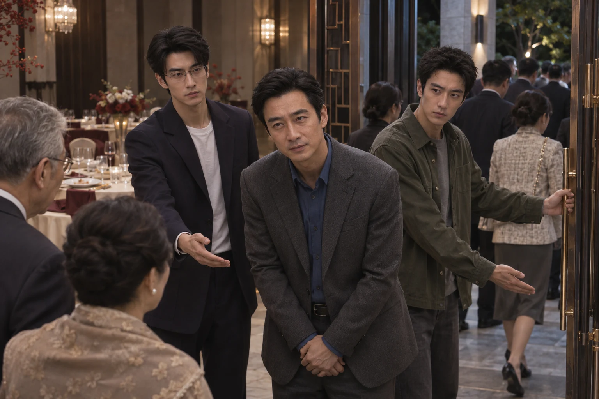
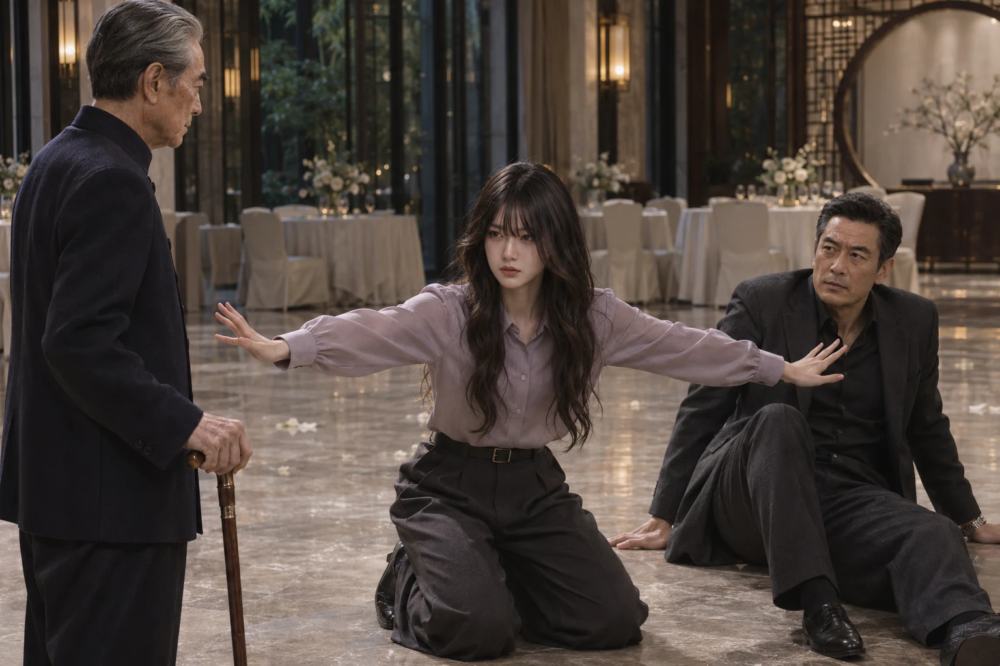
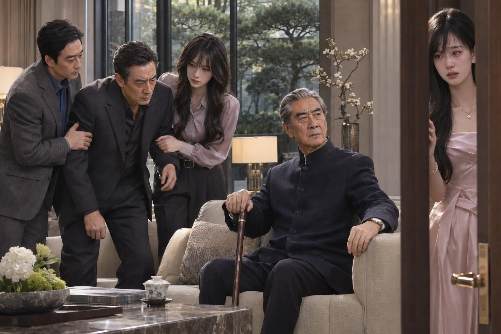
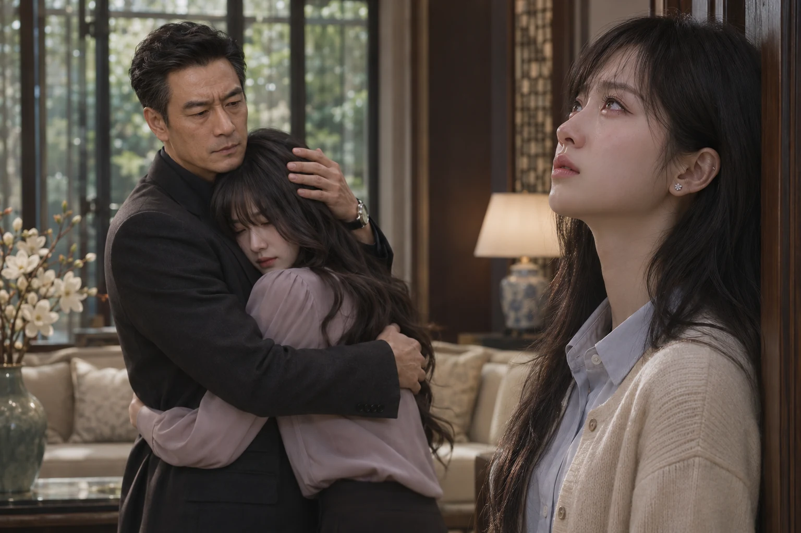
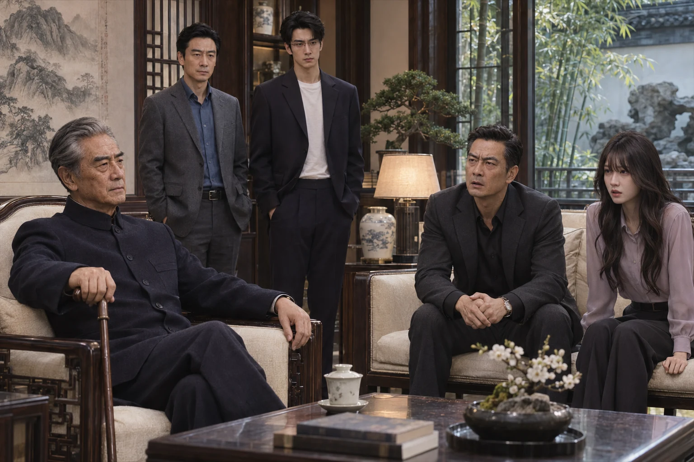

ตอนที่ 04
ทรยศ
ความเจ็บแสบแล่นริ้วไปทั่วใบหน้าฝั่งซ้าย แต่ที่หนักกว่านั้นคือความอับอาย ตั้งแต่เด็กจนโต ซ่งเหวินไม่เคยถูกซ่งเต๋อดุด่าต่อหน้าธารกำนัลมาก่อน เรียกได้ว่าเป็นลูกที่พ่อภาคภูมิใจมาตลอด 49 ปี
มาวันนี้พ่อถึงกับหลุดปากพูดคล้ายว่าไม่ควรฝากตระกูลไว้กับเขา ทำซ่งเหวินทั้งหน้าชาและละอายใจ แต่เมื่อนึกถึงลูกสาวที่ต้องอยู่อย่างหลบ ๆ ซ่อน ๆ มาตลอด 18 ปี ความละอายนั้นก็มลายหายไปจนหมด
ซ่งหว่านไม่เหลือใครแล้ว หากวันนี้เขาไม่เปิดเผยความจริง เขาคงต้องเสียใจและรู้สึกผิดไปตลอดชีวิต
“ขอโทษครับพ่อ ผมผิดเอง แต่เสี่ยวหว่านไม่ผิดอะไร พ่ออย่ารังเกียจอาหว่านเลยนะครับ” เขาอ้อนวอนทั้งที่ยังก้มหน้าไม่สบตาผู้เป็นพ่อ
“ใช่ แกผิดพลาด ผิดแบบไม่น่าให้อภัย” ซ่งเต๋อหัวเราะไร้อารมณ์ คว้าไม้เท้าทุบตีลูกชายหัวแก้วหัวแหวน ความผิดหวังฉายชัดอยู่บนใบหน้า แรงหวดของเขาไร้ปรานี
“อั่ก!!” ซ่งเหวินไม่หลบเลี่ยง ปล่อยให้พ่อระบายโทสะกับเขาอย่างเต็มที่
ซ่งเซวียนเห็นท่าไม่ดี รีบเชิญแขกกลับก่อนเวลา เจียงเซินและเจียงซูก็ไม่อยู่เฉย ช่วยอาสามจัดการเรื่องราววุ่นวาย พวกเขาไม่ลืมขอโทษขอโพยที่แขกต้องมาเจอเรื่องเช่นนี้ในงานเลี้ยงวันเกิดของซ่งอวิ๋น ขณะที่ซ่งจื้อเข้าไปดูแลป้าสะใภ้ใหญ่

โชคดีที่แขกทุกคนไม่ติดใจกับเรื่องดังกล่าว มีแต่ความเห็นใจเสียมากกว่า บ้างก็กลัวว่านายท่านผู้เฒ่าซ่งจะโกรธจนล้มป่วย
“ว้าย!! คุณพ่อคะ” ซ่งหว่านหวีดร้องเสียงหลง น้ำตาคลอเบ้าเมื่อเห็นซ่งเหวินล้มลงไปกองกับพื้นอย่างหมดสภาพ ร่างกายเขาเต็มไปด้วยรอยทุบตี เธอรีบวิ่งเข้าไปแล้วกางแขนปกป้องเขา “หนูขอโทษค่ะ หนูไม่ควรมาที่นี่ตั้งแต่แรก อย่าโทษคุณพ่อเลยนะคะ หนูสัญญาว่าจะไม่มารบกวนอะไรเลยค่ะ”
“...” ไม้เท้าในมือผู้เฒ่าซ่งชะงักนิ่ง นัยน์ตาคมกริบพินิจพิจารณาเด็กสาวตรงหน้า ขณะหอบหายใจหนักหน่วง ลึก ๆ แล้วเขารู้สึกว่าหน้าตาเด็กคนนี้ไม่มีส่วนไหนคล้ายคนตระกูลซ่งเลย

“เข้าไปคุยกันดี ๆ เถอะครับพ่อ ถ้ายังตีอีกพี่ใหญ่กระดูกหักแน่” ซ่งเซวียนกลับมาหลังส่งแขกออกจากห้องจัดงานเลี้ยงเรียบร้อยแล้ว เขาพูดเหมือนเป็นห่วงพี่ชาย แต่แท้จริงเขากลัวพ่อความดันขึ้นจนเป็นลมไปเสียมากกว่า
“ได้ ไปคุยในบ้าน” ผู้เฒ่าซ่งละสายตาจากเด็กสาวบนพื้น เดินดุ่ม ๆ เข้าไปในตัวบ้าน
“คุณพ่อคะ หนูไม่ควรมาที่นี่ตั้งแต่แรกจริง ๆ หนูกลับก่อนนะคะ” ซ่งหว่านประคองซ่งเหวินส่งให้ซ่งเซวียนประคองต่อ จากนั้นก็ก้มลงไปหยิบกระเป๋าสะพายใบเล็กซึ่งตกอยู่ที่พื้น ทำท่าจะออกจากบ้านซ่งอย่างปากพูด
ทว่าซ่งเหวินรีบคว้าข้อมือลูกสาวไว้พลางส่ายศีรษะ “ไม่เป็นไร มันคือความผิดของพ่อเอง หากวันนี้ไม่พูด ลูกก็ต้องอยู่ในความลับต่อไป พ่อไม่อยากให้ลูกน้อยเนื้อต่ำใจอีกแล้ว”
“แต่หนู..” ซ่งหว่านลังเลแกมลำบากใจ คล้ายไม่อยากสร้างปัญหาให้บ้านใหญ่
“ไม่มีแต่อะไรทั้งนั้น ไปเถอะ ไม่ต้องกลัว ปู่ไม่ใช่คนใจดำอะไร เขาไม่เอาความโกรธมาลงที่ลูกหรอก” ซ่งเหวินพูดอย่างมั่นใจ เขาคิดว่ารู้จักพ่อตัวเองดีพอ แม้ท่านจะเด็ดขาดในบางมุม แต่หากได้ชื่อว่าเป็นลูกหลานตระกูลซ่ง และไม่เคยทำอะไรผิดร้ายแรง ท่านมักเมตตาและปกป้องก่อนเสมอ
“หนูไม่กลัวว่าคุณปู่จะโกรธ แต่หนูกลัวคุณป้ากับน้องรองเสียใจ” ซ่งหว่านปาดน้ำตาลวก ๆ แต่คนเป็นพ่อไม่ยอมให้เธอคัดค้านอะไรไปมากกว่านั้น ดึงเธอออกจากห้องจัดเลี้ยงและตัดผ่านโถงทางเดินเข้าสู่ตัวบ้าน
ซ่งเซวียนกลืนไม่เข้าคายไม่ออก ช่วยประคองพี่ชายแต่ในใจไม่เห็นด้วยกับการกระทำของอีกฝ่าย
พี่ชายกล้าหักหลังภรรยาตัวเองอย่างเลือดเย็นเช่นนี้ได้อย่างไร ทำลายครอบครัวตัวเองให้พังทลายเพราะความมักมาก น่าผิดหวังเหลือเกิน
เมื่อซ่งเหวินถูกประคองเข้าไปในห้องโถงรับแขกขนาดใหญ่ ก็พบว่าตอนนี้นายท่านผู้เฒ่านั่งอยู่ตรงโซฟา ความโกรธเกรี้ยวยังปกคลุมไปทั่ว ชวนให้แผ่นหลังเขาหนาวสะท้าน
นายท่านผู้เฒ่าหันมองทางหนึ่ง เห็นหลานสาวเกาะขอบประตู แอบมองสถานการณ์ด้วยดวงตาแดงเรื่ออย่างน่าสงสาร ใจคนเป็นปู่พานเจ็บแปลบขึ้นมา

“พ่อครับ ผมรู้ว่าสิ่งที่ผมทำมันผิด”
“รู้ว่าผิด? แล้วแกทำไปทำไม” ผู้เฒ่าซ่งเคาะไม้เท้าลงพื้นเป็นจังหวะ กึ่งกดดันและคาดคั้นอยู่ในที
ซ่งหว่านขมวดคิ้วมุ่น หลุดเสียกิริยาเป็นครั้งแรก ริมฝีปากแห้งผากขึ้นเรื่อย ๆ เธอถูกรัศมีทรงอำนาจของซ่งเต๋อกดทับ จำได้ว่าชาติก่อนตาเฒ่าตรงหน้าไม่ได้ดุดันขนาดนี้ เธอทำอะไรผิดพลาดตรงไหนกัน
“ขอโทษครับพ่อ” ซ่งเหวินไม่มีอะไรจะแก้ตัว
เขาเห็นแก่ตัว ปล่อยผู้หญิงที่ตัวเองรักไปไม่ได้ แต่หน้าตาทางสังคมก็ยังต้องรักษา รักแรกของเขาจึงต้องอยู่ในฐานะภรรยาลับ ๆ มาตลอด 20 ปี
“แกพูดเป็นแค่นี้ใช่ไหม”
ซ่งเหวินก้มหน้าลงต่ำ “ตอนนี้อาผิงไม่อยู่แล้ว เสี่ยวหว่านเหลือแค่ผมคนเดียว พ่อเมตตาหลานเถอะนะ”
ไม่พูดเปล่า ดึงลูกสาวเข้ามากอดไว้อย่างหวงแหน
ซ่งอวิ๋นกลอกตามองเพดาน เธอไม่อยากร้องไห้ แต่ภาพตรงหน้าทำให้ความสมบูรณ์แบบและอบอุ่นตลอด 18 ปีพังทลายลงต่อหน้าต่อตา ตอนเห็นเรื่องราวในความฝันก็ปวดใจมากแล้ว มาเห็นของจริงยิ่งร้าวลึกกว่าเดิม

หญิงสาวอดคิดไม่ได้ว่า แม้พ่อจะดูเหมือนรักเธอมาก แต่หากกล่าวกันตามจริง ท่านไม่เคยทำเหมือนทะนุถนอมเธอดุจแก้วที่ใกล้ร้าวเช่นนั้นมาก่อนเลย
“ผิง? ชื่อนี้คุ้นหูมากเลย” ซ่งเซวียนหลุบตาลง พึมพำเสียงเบา แต่นึกอย่างไรก็นึกไม่ออก
ทว่าคำพูดลูกชายคนสุดท้อง สะกิดความทรงจำเมื่อหลายปีก่อน ตอนซ่งเหวินยังเป็นเด็กหนุ่มรุ่นใหม่ไฟแรง เจ้าใหญ่เคยมีคนรักชื่อ ‘ฮวาผิง’ คบกันมายาวนาน ตนไม่ได้ว่ากล่าวอะไร แม้จะเห็นว่าฐานะต่างกัน
จนกระทั่งซ่งเหวินอายุ 27 ปี เขาเห็นว่าทั้งคู่ยังไม่แต่งงานกันเสียที จึงท้วงติงเล็กน้อย เนื่องจากถึงเวลาสร้างครอบครัวแล้ว หากไม่คิดแต่งงานก็อย่ารั้งผู้หญิงคนหนึ่งให้อยู่ข้างตัว
สุดท้ายซ่งเหวินเดินมาบอกเขาว่าเลิกกับฮวาผิงแล้ว ด้วยความต้องการไม่ตรงกัน ฝ่ายหญิงไม่อยากมีลูก จึงตกลงเลิกรากันด้วยดี เขาเห็นว่าลูกชายเป็นโสดอยู่นานนับปี จึงนัดดูตัวกับลูกสาวสหายคนหนึ่งในแวดวงธุรกิจ
ทุกอย่างเป็นใจ ทั้งฐานะทางสังคม ฐานะทางการเงิน ตระกูลโจวล้วนเหมาะสม ยิ่งเด็กสองคนแสดงออกว่าชอบพอกันทั้งสองฝ่าย คบหากันเพียงหนึ่งปีจัดงานแต่งงาน จากนั้นอีกหนึ่งปีก็ตั้งครรภ์ และให้กำเนิดเจ้าก้อนแป้งแสนจ้ำม่ำให้เขากับภรรยาอุ้มชู
“แม่ของหนูชื่ออะไร” นายท่านผู้เฒ่าซ่งเลื่อนสายตาคมกริบไปมองซ่งหว่าน
“เอ่อ แม่ของหนูชื่อฮวาผิงค่ะ” ซ่งหว่านตอบอย่างกล้า ๆ กลัว ๆ
“เยี่ยมจริง ๆ” ซ่งเต๋อคว้าจอกชาเขวี้ยงไปกระแทกศีรษะซ่งเหวิน โทสะพุ่งสูงเสียดฟ้า
“โอ๊ย!” ซ่งเหวินกุมหน้าผาก รับรู้ได้ถึงของเหลวอุ่น ๆ ไหลออกมาจากปากแผล
“ในเมื่อลูกของแกเหลือแค่แกคนเดียว ก็ไปทำหน้าที่พ่อให้เต็มที่เถอะ” ผู้เฒ่าซ่งเอนหลังพิงพนักพิง
“!!” คำพูดนั้นไม่เพียงสร้างความตื่นตะลึงแก่สองพ่อลูกเท่านั้น ซ่งเซวียน เจียงเซินและเจียงซูเองก็อดสะดุ้งในใจไม่ได้
“พ่อ..หมายความว่ายังไง”
“แกทรยศคู่ชีวิต แล้วเรื่องอื่น ๆ แกจะซื่อตรงได้ยังไง แน่นอน..เด็กไม่มีความผิด แต่ถ้าแกต้องการให้ฉันทำเหมือนไม่มีอะไรเกิดขึ้น แล้วปล่อยให้พวกแกอยู่ด้วยกันเหมือนครอบครัวสุขสันต์ มันคงเป็นไปไม่ได้”
“…” ซ่งอวิ๋นบีบมือตัวเองแน่น นี่เป็นความเปลี่ยนแปลงแรกที่ไม่เหมือนในฝัน ไม่รู้เกิดอะไรขึ้น การตัดสินใจของคุณปู่ไม่เหมือนเดิม อาจเพราะในฝัน เธอโวยวายอาละวาดจนงานเลี้ยงวันเกิดพังไม่เป็นท่า คุณปู่โกรธเคืองพ่อและล้มป่วยในคืนเดียวกัน
ทำให้พี่สาวนอกสมรสคนนี้ได้เข้ามาอยู่ในบ้านซ่งแบบงง ๆ ซึ่งอาการป่วยของปู่ซ่งทรุดตัวลงเรื่อย ๆ และจากไปภายในเวลาไม่นานนัก จากนั้นทุกอย่างก็เลวร้ายลง พ่อของเธอขึ้นเป็นหัวหน้าตระกูล ไม่มีใครคัดง้างความต้องการของเขา เพราะถือว่าคำพูดของหัวหน้าตระกูลเป็นคำขาด
ผู้เฒ่าซ่งเห็นความตกใจของลูกหลาน แต่สีหน้าเขาหนักแน่นมั่นคงราวหินผา หากภรรยาไม่เตือนด้วยคำพูดแปลก ๆ บางทีเขาอาจไม่ตัดสินใจเลือกทางนี้ก็ได้ แต่เพราะระหว่างเขากับภรรยามีบางเรื่องที่แค่มองตาก็รู้กันอยู่ในใจ วันนี้เขาจึงต้องเด็ดขาด

“ผมรู้ว่าผมทำผิด แต่พ่อต้องรังเกียจเสี่ยวหว่านถึงขั้นตัดขาดกับผมเพราะไม่ต้องการยอมรับลูกของผมเลยเหรอครับ” ซ่งเหวินไม่อยากเชื่อหู ที่ผ่านมาเขาถูกวางตัวให้เป็นหัวหน้าตระกูลซ่งคนต่อไป
อาณาจักรซ่งกรุ๊ปก็ต้องเป็นเขาที่จะได้ขึ้นเป็นใหญ่ วันนี้พ่อของเขากลับตัดเขาออกอย่างง่ายดาย ในสายตาพ่อ เขามีค่าแค่ไหนกัน เพียงเพราะไม่สมบูรณ์แบบและเกิดรอยตำหนิ เพียงเท่านั้นเองน่ะหรือ
“แกยังไม่เข้าใจอีกเหรอ แกไม่ได้ทรยศเท่านั้น แต่ทุกอย่างที่เกิดขึ้น แกตั้งใจทำ วางแผนทุกอย่างแยบยล ตบตาทุกคนมาหลายปี แกคงคิดว่าทุกคนโง่กระมัง”